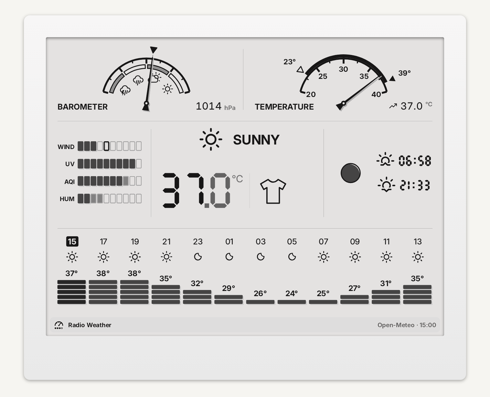
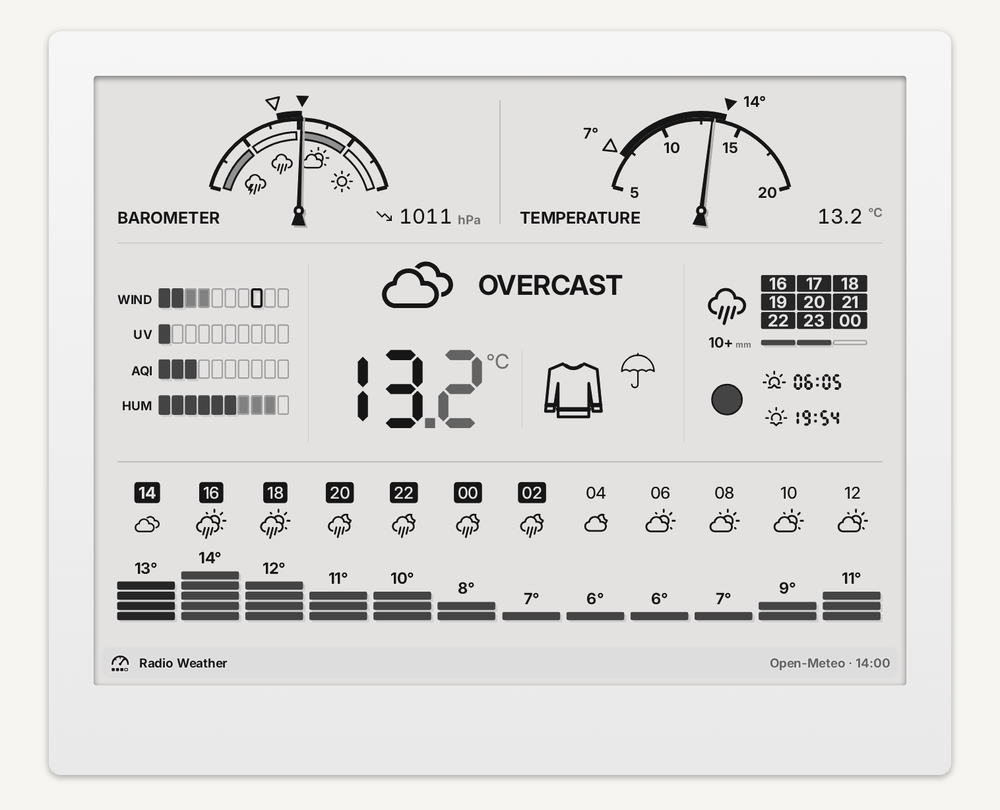
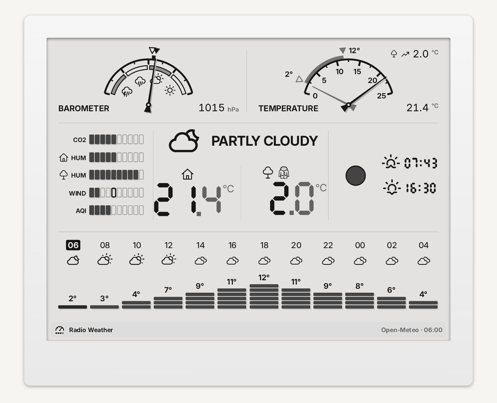
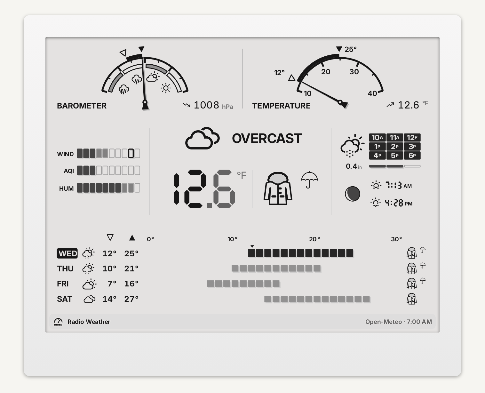

The weather as a calm early-80s hi-fi receiver, for TRMNL e-paper displays. This is the real plugin running in your browser: pick a day, a device and your settings, or look at the weather where you are.
What it shows
Dials on the TRMNL X: a barometer with the pressure trend, a temperature dial with today's low and high.
Console: the temperature in segment digits, and what to wear: clothing, umbrella, sunglasses.
Meters for wind and gusts, UV, air quality, humidity, pollen and pressure, only when they matter.
Rain or sun: an hour calendar when rain is coming, otherwise sunrise, sunset and the moon as seen from your place.
Bottom strip: the coming days or hours.
Indoor sensor: a TRMNL temperature sensor on this screen or on another TRMNL, with an optional label; the CO2 meter shows when the source gives a CO2 reading.
Every view: full, half horizontal, half vertical, quadrant; 1-bit, greyscale and colour screens; dark mode.
Offline: when Open-Meteo is slow or down, the last saved forecast shows with its time.
Guide: every part of the screen
Four real screens from this page (TRMNL X, full view). Numbers match the lists. Values come from the plugin's code; yellow and red show on colour screens only, on the others count the blocks.

1234567891011121314
Barometer (X): the needle is the air pressure now, scale 970 to 1050 hPa. The four zones are 20 hPa each: thunderstorm (970 to 990), rain (990 to 1010), changeable (1010 to 1030), sunny (1030 to 1050). Normal is about 1013 hPa.
Pressure and trend: hPa now; the arrow compares with 3 hours ago (rising or falling from 1 hPa, otherwise level).
Temperature dial (X): the black needle is the temperature now.
Low and high marks: the outlined triangle is today's lowest temperature, the filled one today's highest; the thick arc between them is today's range. The barometer has the same marks for the lowest and highest pressure of the next 24 hours.
Temperature and arrow: the arrow compares now with 3 hours ahead (up or down from 1 degree C, 2 degrees F, otherwise level).
Meters: up to four rows, chosen by what matters now (UV only from a day maximum of 3, pollen only when there is some, air quality, wind, humidity; the barometer row only fills a spare place). 10 blocks on large screens, 5 on small ones. Bands are in the table below.
Light grey blocks: the highest value still to come today (the rest of today up to midnight).
Condition: icon and words for the weather now, in your language; a moon icon at night.
Temperature digits in the unit you chose. The last digit is the tenths.
What to wear: one garment by the felt temperature from now to 3 hours ahead (coldest and warmest hour): parka under 3 C (37 F), jacket under 12 C (54 F), sweater under 18 C (64 F), otherwise a T-shirt. An umbrella is added when any hour until 19:00 (at least 3 hours) has a rain chance of 50 % or more. The garment changes only once the felt temperature is 1 degree C (2 F) past the line, so it does not flip back and forth.
Sun times: the next sunrise and sunset; once today's has passed, tomorrow's shows.
Moon: the phase as it looks from your place today.
Hours strip: 12 columns of 2 hours from the current even hour, each with its time, icon, and a bar with the temperature. A black time stamp is the first column (now) or a column where it rains (a rain chance of 50 % or more in one of its hours).
Footer: plugin name, data source and the time of the last update (can be hidden in the settings). When the weather service is down it shows the last saved forecast with its time.

12345
Rain column: replaces the sun and moon while rain is expected in the next 12 hours. The icon says what falls: rain, snow or hail.
Hour calendar: the next 6 or 9 hours. A dark tile is an hour with a rain chance of 50 % or more (or a wet weather code).
Rain gauge: 3 blocks by the heaviest hour of the next 12: 1 drizzle (under 1 mm/h, 0.04 in/h), 2 rain, 3 heavy rain (4 mm/h, 0.16 in/h and up). The number is the 12 hour total, at most 10+ mm (0.4+ in).
Hours strip: the dark time stamps show the same wet hours over the next day.
Gust outline on WIND: the outlined block is the strongest gust still to come today. Dark blocks are the wind now, light grey blocks the wind speed still to come.

12345
Indoor sensor: the house icon (an anemometer, a mast with cups, with Sensor icon Anemometer) marks the sensor's reading (your own TRMNL's or another one's), the tree icon the outside weather. One of them is the big black reading (setting Main reading), the other is grey beside it. An optional short label (for example Upstairs) shows beside the house icon and on the dial.
Outside reading with its cues: the garment and umbrella always belong to the outside weather.
Second needle: the grey needle is the other reading. The marks and range on the dial belong to the outside temperature.
CO2 (sensor with CO2): comes first with the sensor, and moves up the list past 1400 ppm. Indoor humidity is a second block row next to the outside one, marked with the house and the tree.
Small readout: the reading that is not the main one, with its trend arrow.

12345
Days strip (setting Bottom strip): the weekday, the weather icon, and the lowest (outlined triangle) and highest (filled triangle) temperature of each day. 4 to 7 days fit on screen.
Today: the first row, its label in black.
Range bars: from the day's low to its high, all on one temperature scale.
Now marker: the small triangle above today's bar is the temperature now.
Cue per day: the garment for the day's felt temperatures between 07:00 and 19:00, and an umbrella when the rain chance there is 50 % or more.
The meters, band by band
A block is yellow when its centre is in the warning zone, red in the alarming zone. A meter has 10 blocks (5 on small screens); the full meter is the whole scale. Wind and rain follow your unit setting.
Meter
Full meter
Good
Warning (yellow)
Alarming (red)
WIND
0 to 60 km/h (0 to 40 mph)
under 30 km/h (20 mph)
30 to 50 km/h (20 to 30 mph)
over 50 km/h (30 mph)
UV
UV index 0 to 11
under 3 (low)
3 to 7 (moderate, high)
8 and up (very high, extreme)
AQI
European AQI 0 to 100
under 40 (good, fair)
40 to 60 (moderate)
over 60 (poor, very poor, extremely poor)
HUM
0 to 100 % relative humidity
A plain reading, no bands.
POLLEN
grains per m3 of the strongest of grass, birch, alder, mugwort, olive, ragweed
under 10 (low)
10 to 50 (moderate)
over 50 (high; very high from 150)
BARO
970 to 1050 hPa
No bands. About 1013 hPa is normal; the dial shows the weather zones.
CO2
400 to 2000 ppm (indoor sensor)
under 1000 ppm
1000 to 1400 ppm
over 1400 ppm
RAIN
3 blocks, mm per hour
1 block: drizzle, under 1
2 blocks: rain, from 1
3 blocks: heavy rain, from 4
Sources: UV bands from the WHO, air quality from the European scale as served by Open-Meteo (European Environment Agency bands), pollen grains per m3 as Open-Meteo reports them. The wind and CO2 lines are this plugin's own, not an official standard.
Other views and dark mode
Half horizontal: the console only (meters, condition, digits, cue, rain or sun), no dials and no bottom strip. Half vertical: digits, cue, rain calendar, two meters and the hours strip. Quadrant: digits, the rain calendar or the sun, and one meter. The OG has no dials and uses 5-block meters. Everything above reads the same.
Dark mode: the same screen in white on black; greys and the grey needle keep their meaning.
Settings
Location
City, postal code or latitude,longitude.
Temperature unit
Celsius or Fahrenheit. Wind, rain and pressure follow.
Time format
24 hours (17:00) or 12 hours (5:00 PM).
Bottom strip
Days, hours, or hours then days.
Switch to days at
With Hours, then days: the hour (12:00 to 23:00, default 18:00) the hours give way to the days.
Sensor icon
The icon in front of the sensor's reading: a house (default) or an anemometer, a mast with cups, for a sensor outside. Only the icon changes.
Hide title bar
Hides the bar with the plugin name and update time on the full view.
Sensor
None (outside weather only), This TRMNL, Another TRMNL, or a provider: Home Assistant, Awair, AirGradient, Sensibo, Ecowitt, Adafruit IO or a JSON link. Readings older than 3 hours are ignored. See Indoor sensor sources below. On this page: "Sensor on" and "Sensor".
Sensor from another TRMNL
Shows for Another TRMNL only: the digits in the address of its page on trmnl.com. Empty or not found: this TRMNL's own sensor.
Sensor name
Optional short name, for example Upstairs, next to the sensor's icon and on the temperature dial.
Main reading
Which reading comes first, in black: Automatic, Sensor or Outside. The other follows in grey.
The language follows your TRMNL account language (English, German, French, Spanish, Dutch, Japanese and the languages TRMNL translates).
Indoor sensor sources
Set Sensor to a provider and fill in the fields that show. The reading takes the place of a TRMNL sensor: same house icon, label, main reading and CO2 meter (shown when the source gives CO2). TRMNL fetches it from the cloud, so the source must be reachable from the internet. Tokens go in password fields and are only sent to the provider. A reading older than 3 hours is ignored; when the source fails, the last good reading stays for up to 3 hours and the bottom bar says SENSOR OFFLINE with its time.
Beta = built from the provider's API docs, not yet confirmed with a real device; tell us if one fails.
Home Assistant
Tested. Address of your Home Assistant from the internet (https://, for example Nabu Casa or a Cloudflare tunnel; a local address does not work), a long-lived access token (your profile, Security), the entity ids for temperature, humidity and CO2 (humidity and CO2 optional). Fahrenheit entities are converted. API.
Awair
Beta. Access token from the Awair Developer Console. Device type and id are optional (empty: your first Awair). The free tier allows 300 readings per device per day. API.
AirGradient
Beta. Token of your place (app.airgradient.com, Settings, Place). Location id optional (empty: the first indoor monitor). API.
Sensibo
Beta. API key from home.sensibo.com/me/api. Device id optional (empty: your first device with a reading). Temperature and humidity only. Unit assumed Celsius. API.
Ecowitt
Beta. Application key and API key from ecowitt.net (API management) and the MAC of the station. Indoor temperature, humidity and, with a CO2 sensor, CO2. API.
Adafruit IO
Beta. Username, active key, and the feed key for each reading (temperature required), plus the unit the temperature feed uses. API.
Custom link (JSON)
Beta. Any https:// link that answers JSON: optional header name and token, a dot path for each reading (data.rooms.0.temp), optional time path, the temperature unit.